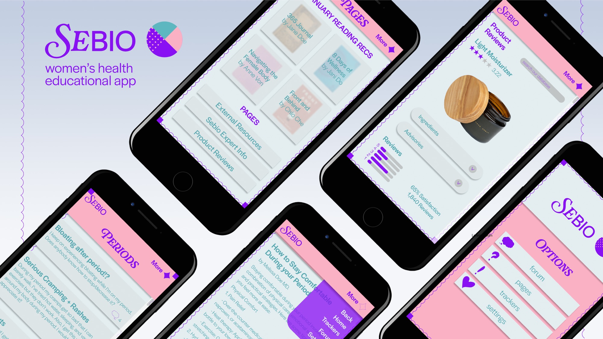
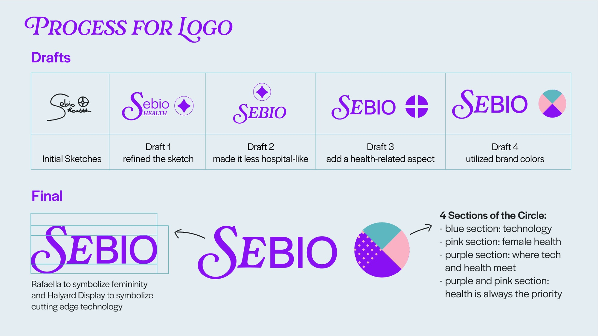
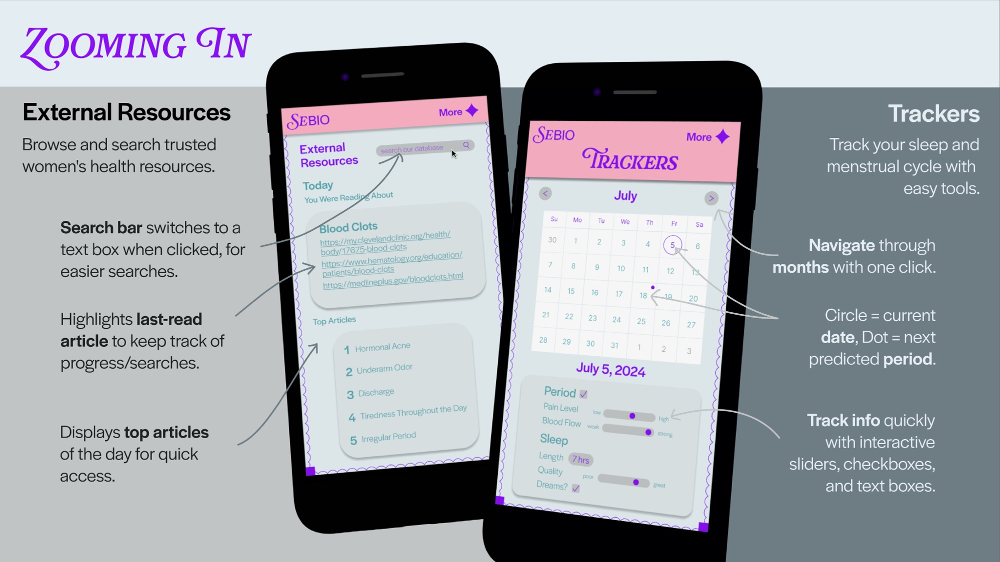
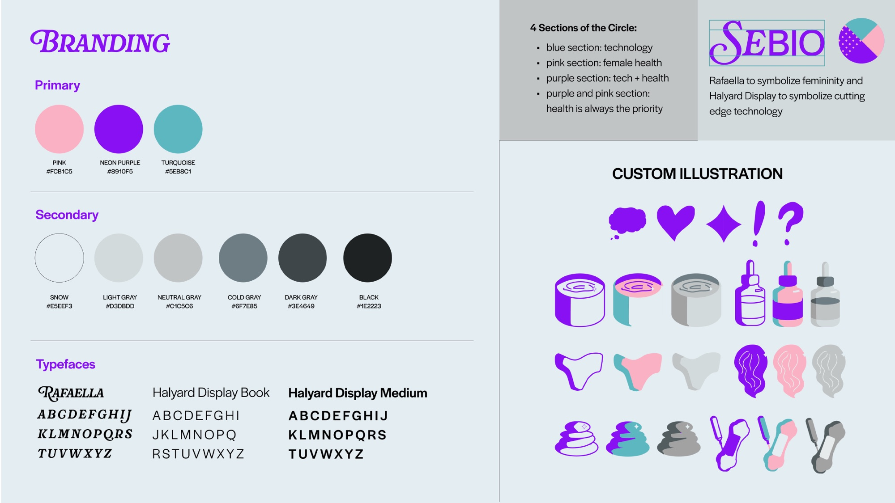

Sebio: Women’s Health App — UI/UX, Branding, Illustration
Software used: Figma, Adobe Illustrator, Adobe Photoshop, Blender, Procreate
Sebio is a name for a series of projects I am working on, all with the goal of bringing more accessibility to health. This women’s health app gives women a community and database of products and information that promote knowledge and assurance rather than fear mongering by only including verified, non-sponsored reviews and information written by women experts.

Figma File Link (Partial Prototype): https://www.figma.com/design/UXyITwhCpGRO9GRhaQFmqc/sebio?node-id=0-1&t=tRTbCRaEXS3D366o-1
Process


